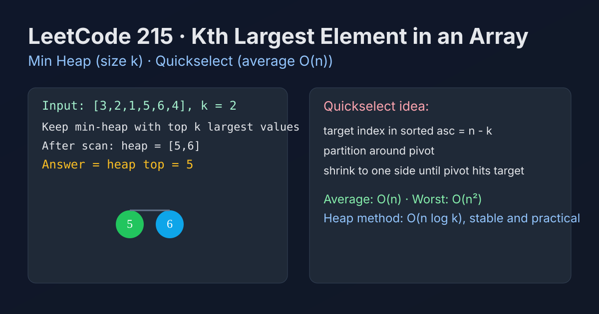

LeetCode 215: Kth Largest Element in an Array (Heap + Quickselect)
LeetCode 215HeapQuickselectToday we solve LeetCode 215 - Kth Largest Element in an Array.
Source: https://leetcode.com/problems/kth-largest-element-in-an-array/

English
Problem Summary
Given an integer array nums and an integer k, return the k-th largest element in the array (not the k-th distinct value).
Key Insight
Two practical approaches:
- Min-heap of size k: keep the largest k numbers seen so far; heap top is answer.
- Quickselect: partition around pivots to locate index n-k in average linear time.
Brute Force and Limitations
Sorting the array and taking nums[n-k] works and is easy, but costs O(n log n) even when full sorting is unnecessary.
Optimal Algorithm Steps
Min-heap (stable choice):
1) Create empty min-heap.
2) For each number, push it into heap.
3) If heap size exceeds k, pop smallest.
4) After scan, heap top is the k-th largest.
Quickselect (average faster):
1) Convert target to target = n-k (sorted ascending index).
2) Partition by pivot to place pivot at final index p.
3) If p == target, return; else recurse/iterate one side.
Complexity Analysis
Min-heap: Time O(n log k), Space O(k).
Quickselect: Average Time O(n), Worst Time O(n^2), Space O(1) iterative.
Common Pitfalls
- Confusing k-th largest with k-th distinct largest.
- Quickselect target index should be n-k, not k-1.
- Heap approach must pop when size exceeds k, not when equals k.
Reference Implementations (Java / Go / C++ / Python / JavaScript)
class Solution {
public int findKthLargest(int[] nums, int k) {
PriorityQueue<Integer> pq = new PriorityQueue<>();
for (int x : nums) {
pq.offer(x);
if (pq.size() > k) pq.poll();
}
return pq.peek();
}
}import "container/heap"
type MinHeap []int
func (h MinHeap) Len() int { return len(h) }
func (h MinHeap) Less(i, j int) bool { return h[i] < h[j] }
func (h MinHeap) Swap(i, j int) { h[i], h[j] = h[j], h[i] }
func (h *MinHeap) Push(x interface{}) { *h = append(*h, x.(int)) }
func (h *MinHeap) Pop() interface{} {
old := *h
x := old[len(old)-1]
*h = old[:len(old)-1]
return x
}
func findKthLargest(nums []int, k int) int {
h := &MinHeap{}
heap.Init(h)
for _, x := range nums {
heap.Push(h, x)
if h.Len() > k {
heap.Pop(h)
}
}
return (*h)[0]
}class Solution {
public:
int findKthLargest(vector<int>& nums, int k) {
priority_queue<int, vector<int>, greater<int>> pq;
for (int x : nums) {
pq.push(x);
if ((int)pq.size() > k) pq.pop();
}
return pq.top();
}
};import heapq
class Solution:
def findKthLargest(self, nums: list[int], k: int) -> int:
heap = []
for x in nums:
heapq.heappush(heap, x)
if len(heap) > k:
heapq.heappop(heap)
return heap[0]class MinHeap {
constructor() { this.a = []; }
size() { return this.a.length; }
top() { return this.a[0]; }
push(x) {
const a = this.a; a.push(x);
let i = a.length - 1;
while (i > 0) {
const p = (i - 1) >> 1;
if (a[p] <= a[i]) break;
[a[p], a[i]] = [a[i], a[p]];
i = p;
}
}
pop() {
const a = this.a;
if (!a.length) return;
const last = a.pop();
if (!a.length) return;
a[0] = last;
let i = 0;
while (true) {
let l = i * 2 + 1, r = l + 1, m = i;
if (l < a.length && a[l] < a[m]) m = l;
if (r < a.length && a[r] < a[m]) m = r;
if (m === i) break;
[a[i], a[m]] = [a[m], a[i]];
i = m;
}
}
}
var findKthLargest = function(nums, k) {
const h = new MinHeap();
for (const x of nums) {
h.push(x);
if (h.size() > k) h.pop();
}
return h.top();
};中文
题目概述
给定整数数组 nums 和整数 k，返回数组中第 k 大的元素（不是去重后的第 k 大）。
核心思路
常用两种：
- 大小为 k 的小顶堆：始终保留“当前最大的 k 个数”，堆顶就是第 k 大。
- 快速选择 Quickselect：通过分区定位到升序下标 n-k。
暴力解法与不足
直接排序后取 nums[n-k] 最直观，但复杂度 O(n log n)，很多时候做了不必要的完整排序。
最优算法步骤
小顶堆做法（工程上稳妥）：
1）初始化空小顶堆。
2）遍历数组，元素入堆。
3）若堆大小超过 k，弹出堆顶（最小值）。
4）遍历结束后堆顶即第 k 大。
Quickselect：
1）目标下标设为 target=n-k。
2）做 partition，把 pivot 放到最终位置 p。
3）根据 p 与 target 关系向一侧继续。
复杂度分析
小顶堆：时间 O(n log k)，空间 O(k)。
Quickselect：平均 O(n)，最坏 O(n^2)，迭代写法额外空间 O(1)。
常见陷阱
- 把“第 k 大”误写成“第 k 个不同元素”。
- Quickselect 的目标下标应为 n-k。
- 小顶堆应在“大小超过 k”时才弹出。
多语言参考实现（Java / Go / C++ / Python / JavaScript）
class Solution {
public int findKthLargest(int[] nums, int k) {
PriorityQueue<Integer> pq = new PriorityQueue<>();
for (int x : nums) {
pq.offer(x);
if (pq.size() > k) pq.poll();
}
return pq.peek();
}
}import "container/heap"
type MinHeap []int
func (h MinHeap) Len() int { return len(h) }
func (h MinHeap) Less(i, j int) bool { return h[i] < h[j] }
func (h MinHeap) Swap(i, j int) { h[i], h[j] = h[j], h[i] }
func (h *MinHeap) Push(x interface{}) { *h = append(*h, x.(int)) }
func (h *MinHeap) Pop() interface{} {
old := *h
x := old[len(old)-1]
*h = old[:len(old)-1]
return x
}
func findKthLargest(nums []int, k int) int {
h := &MinHeap{}
heap.Init(h)
for _, x := range nums {
heap.Push(h, x)
if h.Len() > k {
heap.Pop(h)
}
}
return (*h)[0]
}class Solution {
public:
int findKthLargest(vector<int>& nums, int k) {
priority_queue<int, vector<int>, greater<int>> pq;
for (int x : nums) {
pq.push(x);
if ((int)pq.size() > k) pq.pop();
}
return pq.top();
}
};import heapq
class Solution:
def findKthLargest(self, nums: list[int], k: int) -> int:
heap = []
for x in nums:
heapq.heappush(heap, x)
if len(heap) > k:
heapq.heappop(heap)
return heap[0]class MinHeap {
constructor() { this.a = []; }
size() { return this.a.length; }
top() { return this.a[0]; }
push(x) {
const a = this.a; a.push(x);
let i = a.length - 1;
while (i > 0) {
const p = (i - 1) >> 1;
if (a[p] <= a[i]) break;
[a[p], a[i]] = [a[i], a[p]];
i = p;
}
}
pop() {
const a = this.a;
if (!a.length) return;
const last = a.pop();
if (!a.length) return;
a[0] = last;
let i = 0;
while (true) {
let l = i * 2 + 1, r = l + 1, m = i;
if (l < a.length && a[l] < a[m]) m = l;
if (r < a.length && a[r] < a[m]) m = r;
if (m === i) break;
[a[i], a[m]] = [a[m], a[i]];
i = m;
}
}
}
var findKthLargest = function(nums, k) {
const h = new MinHeap();
for (const x of nums) {
h.push(x);
if (h.size() > k) h.pop();
}
return h.top();
};
Comments